SSADAGOO
한식
search
검색
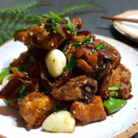
짭조름한 간장과 닭의 콜라보레이션
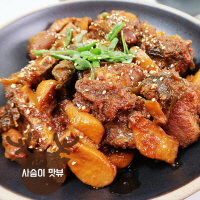
사랑받는 사위를 위한 장모님의 정성듬뿍 음식!
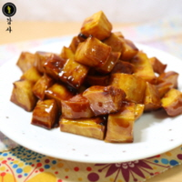
달콤하고 부드러운 영양만점 고구마간식!!
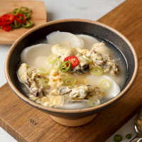
새해가되면 만들어먹는 스페셜한 떡국!!
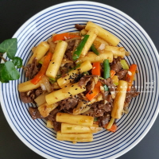
임금님도 반했다! 고오급떡볶이
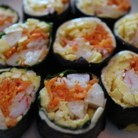
소풍하면 떠오르는 음식의 대명사
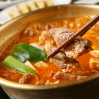
비오는날 소주한잔과 함께하면 끝장!
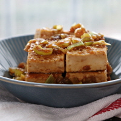
고소한 두부를 한층 업그레이드시킨다!
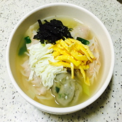
제대앞둔 말년병장도 벌떡 !
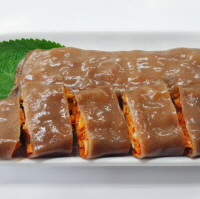
시장가면 꼭 먹어야하는 베스트오브베스트
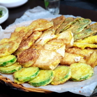
막걸리와 단짝친구 술한병 홀딱
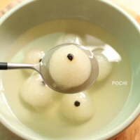
달달한 감기몸살 자연치료제!
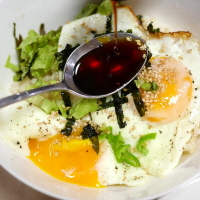
초스피드 간단 식사
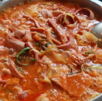
햄요리의 끝판왕 밥세공기뚝딱!
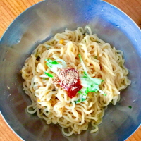
더운 여름날 매콤새콤한 비빔라면 후루룩
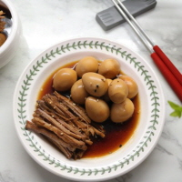
뜨끈한 밥에 쓱싹 최고의반찬
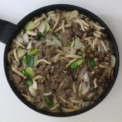
온가족이 함께 즐거운식사의 지름길
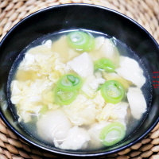
씹지않고 식도로 바로 토스!!
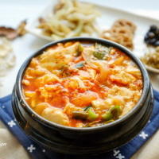
칼칼한 국물이 위장을 가격한다!
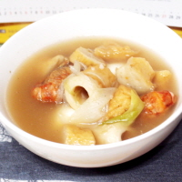
어묵에서 나온 육수가 시너지효과를!
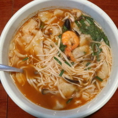
김치 한점 올려서 후루룩!
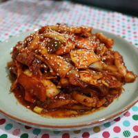
바다속 오징어가 내혓속에서 꿈틀!
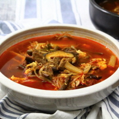
호불호 안갈리는 뜨끈한 국물
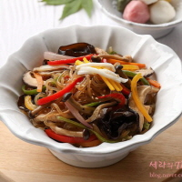
생일날 잔치상에 대표주자
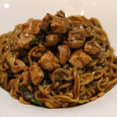
기생충 흥행 일등공신!
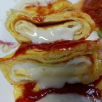
치즈와 계란이라는 깡패조합!
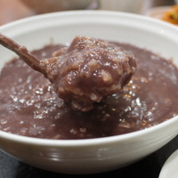
귀신은 물럿거라! 전통있는 우리음식
Previous
1
2
3
Next